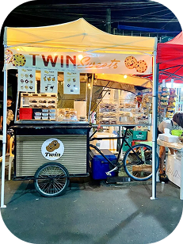
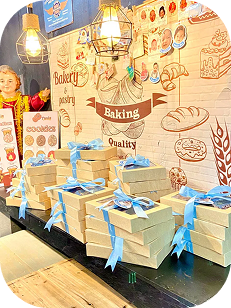
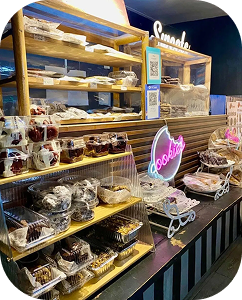

Our Story
Twin Sweets wasn't the beginning. Before the cookies and brownies, the family behind it ran an Unli Rice and Unli Gravy business, serving up different homestyle menus to the neighborhood. Somewhere along the way, that same love for feeding people well turned into a love for baking, and Twin Sweets was born. Today, every brownie and cookie is still made in small batches, the same way that first business was run: with care, consistency, and a lot of heart. What started as sharing good food with neighbors here in Pampang has grown into a little corner people now stop by just for the treats, but the spirit behind it hasn't changed a bit.


